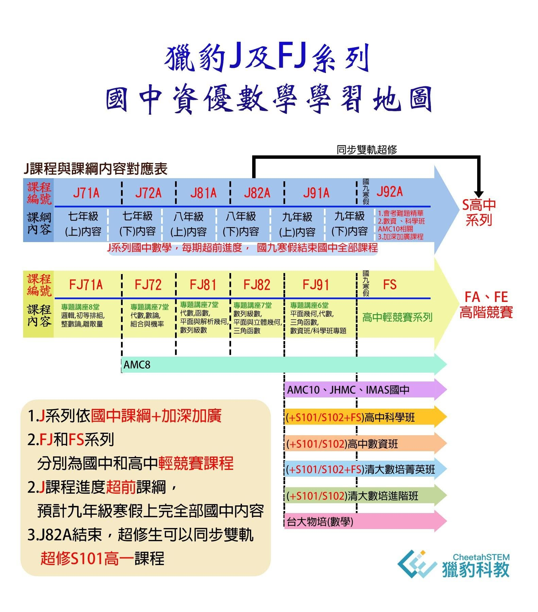

獵豹數學教材的寬廣與前瞻性
本次高雄中學科學班二階口試題「海盜分金」，是獵豹數學國中J和FJ系列的專題教材（在去年獵豹GM家長座談會時,和獵豹網課直播講座中展示過）。
〔獵豹國中數學J71A,J81A+國中競賽FJ71,FJ81 說明及免費公開課〕
4/17(日) 18:30-20:00 宗翰老師、建廷老師
將為大家說明國中資優數學的學習安排方式
以及示範一堂獵豹國中資優數學課!
https://www.facebook.com/groups/695697124716309/permalink/1020513472234671/
https://www.facebook.com/groups/695697124716309/permalink/1022443458708339/
